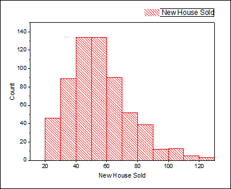
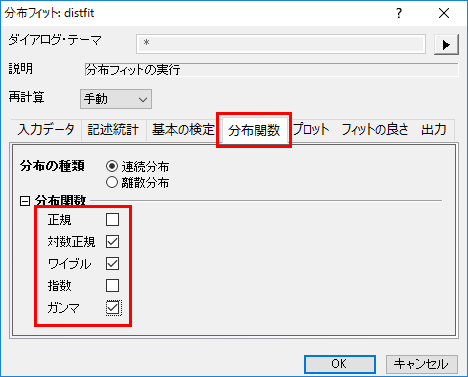
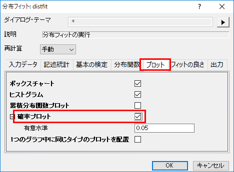
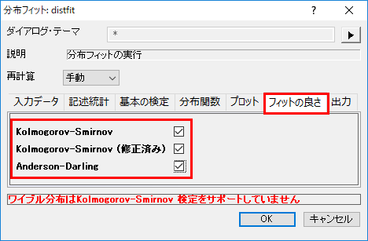
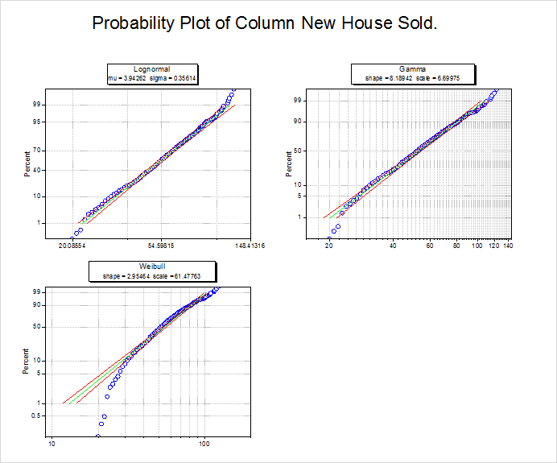
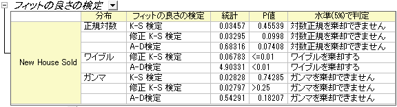
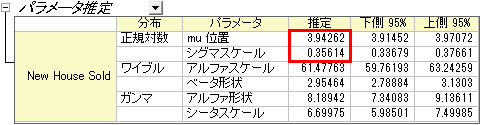

分布フィット
dist-fit
概要
データの分布モデルを知ることは正しい解析やデータの推定をするのに役立ちます。分布フィットツールではユーザがデータの分布を調査するのに役立ち、分布のパラメータを推定することが可能です。
学習する項目
このチュートリアルでは、以下の項目について説明します。
- 実用的なデータを使って分布フィットを実行する
- 算出された結果の読み取り方
ユーザストーリー
建築業者は周辺エリアの過去の販売実績を基に、次年度いくつ家を建てるべきか決定しようとしています。次のことを知りたいと思っています。
- もし80軒建てるとしたら、全ての家が売れる確率はどの程度になるのでしょうか？
- 少なくとも60％の確率で家を売ることができれば、利益を生み出すことが可能になります。そうするには何軒家を建てればいいのでしょうか？
この疑問を解決するために、建築業者は次のことを調べる必要があります。
- 周辺エリアの過去の販売実績のサンプルデータで分布フィットを実行する
- 最もフィットしている分布を選択する
- 選択した分布の累積分布関数を使って確率を計算する
- 確率が60％以上ならば、計画を考え直す
分布の選択
- 新規プロジェクト、または、新規ワークブックを作成します。ヘルプ：フォルダを開く：サンプルフォルダより、\Samples\Statistics\MontanacOutlookPoll.datをインポートします。
- 列Bを選択し、作図：統計：ヒストグラムを選びます。
- 
- 以下を考えて分布を選びます。
- データは自然数のみで集計されています。つまり、連続分布と離散分布の両方でフィットを考えることが可能です。(もし、小数点のデータがある場合、連続分布のみ適用できます。)しかし、大抵は離散分布よりも連続分布のほうがより良いフィットになるため、今回は連続分布を選択します。
- 新しく売れた家の戸数は正の数のため、負の数を取るような正規分布を考える必要はありません。
- ヒストグラムを見ると、ある特定の値周辺にデータが集まっているようです。つまり、指数分布(データが極端に不均整な場合に使用する分布)を考慮する必要はありません。
分布フィットを実行する
- HouseSoldワークシートに戻ります。列Bを選択してOriginのメニューから、統計：記述統計：分布フィットと操作します。
- ダイアログを開いて、分布関数タブを開き、正規のチェックを外し、下図のように3つの分布を選択します。これらの3つの分布は分布を選択するの内容と結論を元に決められています。
- 
- プロットタブを開いて、確率プロットを選択します。
- 
- フィットの良さタブを開いて、3つの全ての要素にチェックを付けます。OKをクリックして、ダイアログを閉じます。
- 
フィットモデルの比較と選択
分布フィットの結果を基にして、フィットモデルを比較、選択します。
- 確率(P-P)プロット
- 参照線にすべての散布図の点が近ければ、データセットに対する分布は良いといえるでしょう。確率プロットより、対数正規分布とガンマ分布のどちらもデータのモデルとして選択しても良いといえるでしょう。
- 
- フィットの良さの検定
- 表のP値において、P値が0.05よりも小さい場合、その分布を0.05レベルで棄却することを意味しています。正規対数分布とガンマ分布のP値が0.05より大きいことが、フィットの良さの検定より分かります。よって、対数正規分布とガンマ分布はどちらもこのデータには良いモデルであるといえます。
- 
確率(P-P)プロットとフィットの良さの検定より、対数正規分布とガンマ分布はこのデータに対してはどちらもよい分布であるといえます。ここでは対数正規分布を選択して、この後の例を進めていくこととします。
推定
最も良い分布モデルが見つかったら、CDFとINV関数を使って、確率を計算していきます。
- もし80軒建てるとしたら、全ての家が売れる確率はどの程度になるのでしょうか？
- 60％の利益を得るためには、何軒の家を建てる必要があるのでしょうか？
- 1つ目の問題を解決するために、ウィンドウメニューからコマンドウィンドウまたはスクリプトウィンドウを開き、下記のコマンドを入力します。
-
logncdf(80, 3.94262, 0.35614) =
- ここで3.94262はμで0.35614はσです。どちらもレポートシートのパラメータ推定表から生成された値です。
- 
- 以下のような結果になります。
logncdf(80, 3.94262, 0.35614) = 0.89136185728793
- 建築業者が80軒の新築物件を建てた場合、約89%の確率で、すべての家が売れることはないだろう、という事がいえます。
- 2番目の問題を解決するために、コマンドウィンドウあるいはスクリプトウィンドウで以下のコマンドを実行します。
-
logninv(1-0.6, 3.94262, 0.35614) =
- 以下のような結果になります。
logninv(1-0.6, 3.94262, 0.35614) = 47.105650533425
- この結果により、建築業者は47軒の新築物件を建てれば利益を得ることが出来そうである、といえます。
 | 上記の分布の選択セクションで対数正規分布を選択したので logncdf と logninv を使用して推定を実行しました。もしガンマ分布を選択していた場合、gamcdfとgaminv を使用します。この場合でも似たような結果を得ることが可能です。
|
Notes：データからより早く分布フィットの結果を見る方法として、他にも記述統計やグラフはあります。
- 記述統計表
- 分位数表
- ヒストグラム
- ボックスチャート
- cdf: 累積分布関数プロット
|